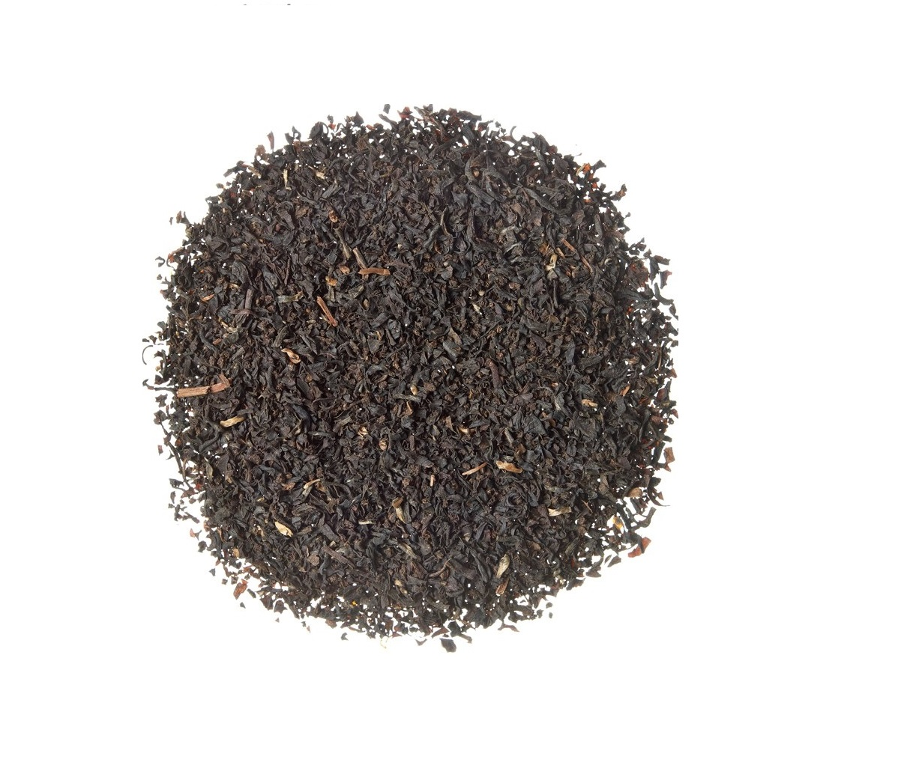
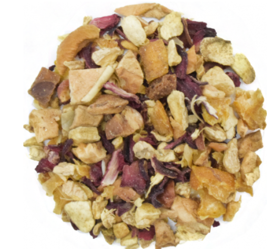
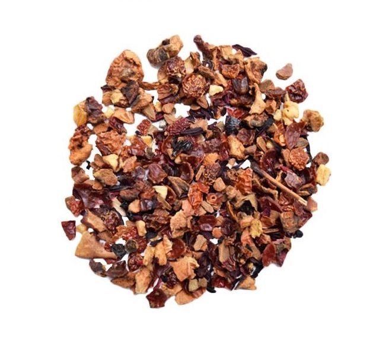

Té Verde
Para el té verde el proceso mas importante es detener el proceso de oxidacion.La elaboracion se inicia con los procesos de marchitamiento y de enrollado de las hojas recien cortadas, a las que despues se les aplican un proceso especial de calor para detener la oxidacion.

Jasmine Mint
Una deliciosa mezcla a base de té verde Gunpowder con menta y flores de jazmín. Sumamente refrescante. Lo puedes disfrutas en frío o caliente.
Comprar

Chai Verde
Un delicioso Chai a base de té verde con canela, cáscara de naranja, jengibre, cardamomo y clavo. Una mezcla muy aromática para los amantes de chai y sabores fuertes.
Comprar

Choco Vainila
Una suave combinación de té verde japonés con trozos de chocolate blanco y obscuro con un toque de vainilla. Este Té es ideal para esos momentos de buenos recuerdos y alegrías.
Comprar

Gun Powder menta (China)
El Gun Powder Marroquí es un té tradicional al noroeste de África. Es una mezcla sumamente refrescante ya que está hecha a base de menta, hierbabuena y té verde Gunpowder.
Comprar

Té verde orgánico de Indonesia
Como región, Indonesia es perfecto para el cultivo del té, ya que tiene un clima completamente tropical, temperatura fresca.Los tés de Indonesia son ligeros, pero llenos de sabor y refrescantes.
Comprar
Té Blanco
Este té es el más bajo en cafeína. Se elabora a partir de los brotes de la planta Camellia sinensis originaria de China, principalmente de la provincia de Fujian. El té blanco no pasa por un proceso de oxidación, se dejan secar los brotes durante 1 ó 2 días al sol y después se llevan al interior donde se dejan secar durante 3 ó 4 días más.

Pai Mu Tan
Pai Mu Tan o también Bai Mudan es un té blanco exquisito que proviene de Fujian, China. Este té está compuesto por brotes de las hojas más nuevas que están por abrir en el arbusto.
Comprar

Apple Chai (China)
Deliciosa mezcla elaborada a base de Pai Mu Tan, manzana, anís estrella, canela, cardomomo y esencias de chocolate, vainilla, crema y almendra. Te ofrece una taza con sabor intenso y ligero al mismo tiempo, gracias a la base de té blanco.
Comprar

Vainilla Jazmín
Vainilla Jazmín es una mezcla a base de té blanco "Pai Mu Tan", vainilla francesa, flores de caléndula y jazmín. Su sabor suave y cremoso relajante y perfecto para pasar un momento de tranquilidad y serenidad
Comprar
Té Negro
El té negro es un té que se encuentra oxidado en mayor grado que las variedades de té verde, té oolong y té blanco. Proviene también de las hojas de Camellia sinensis. El té negro generalmente posee un aroma más fuerte y contiene más cafeína que otros tés con menores niveles de oxidación.

Earl Grey Creme
Una variante de nuestro Earl Grey: un Té negro orgánico cultivado a gran altura, mezclado con esencia de bergamota,flor de aciano, vainilla francesa y un toque de sabor cremoso. Delicioso para tomar caliente o frío.
Comprar

Earl Grey con bergamota
Té negro con esencia a bergamota, un té clásico inglés elaborado para aquellos paladares de buen gusto y con buena apreciacion del exquisito té.
Comprar

Té negro con chocolate
Té negro de Kenia con chispas de chocolate, trozos de almendras con un toque a crema.
Comprar

English Breakfast tea
Una mezcla clásica de diferentes tes negros. Perfecto para empezar el día.
Comprar

Masala Chai
Masala Chai está hecho a base de té negro de Kenia y especiado con jengibre, cardamomo, clavo y canela.
Comprar
Té Pu-Erh
El té Pu-Erh es conocido también como té rojo y se recolecta en Yunnan, provincia del sur de China. Se trata de un té inusual en China, el proceso de fermentación de esta variedad puede durar muchos años en barricas de bambú, lo que hace que las hojas alcancen un color cobrizo y por lo tanto, también la infusión. Así como otros tipos de té pierden sus propiedades y aromas con el tiempo, los pu-erh mejoran. Los Pu-Erh están elaborados a partir de las hojas y brotes de la planta de té assam, que es más grande.
No hay que confundir la fermentación con la oxidación. En la fermentación intervienen microorganismos vivos que actúan sobre el té, en cambio en la oxidación (té negro, oolong) interviene solamente el oxígeno.
Contiene propiedades muy especiales y benéficas para la salud como bajar la presión sanguínea, ayudar a tener una buena digestión y en la disminución de peso, mejora de la función del hígado, reduce el colesterol y triglicéridos.

Pu-Erh Mandarina (Provincia de Yunnan-China)
Pu-Erh con mandarina, una combinación que resalta las notas terrosas, profundas y ligeramente cítricas.
Comprar
Té Oolong
El té oolong o también conocido como té azul proviene también de las hojas de Camellia sinensis, es un té semi oxidado, se obtiene con un oxidado más prolongado del té verde pero no tan extenso como para llegar a convertirse en té negro, es como un punto medio que le da su color.

Treasure Oolong
Nuestro Treasure Oolong está hecho a base de Se Chung Oolong Chino. Esta refrescante mezcla contiene frambuesas, fresas,blue berries, manzanilla y un toque de jamaica.
Comprar
Rooibos
Este té conocido como Honeybush, en español “arbusto de miel”, por el dulce perfume de sus flores. Contiene una cantidad muy baja de taninos y no contiene cafeína, por lo que es una buena alternativa al té y al café. Crece únicamente en un área del sudeste de Sudáfrica y es muy parecida al Rooibos pero más dulce.
Algunas propiedades o beneficios del Rooibos:
- Es excelente para la digestión.
- Reduce los niveles del estrés.
- Ayuda a disminuir la retención de líquidos.
- Ideal para relajarse, ayuda a dormir mejor.
- Tiene un efecto diurético.
- Contribuye a tener una mejor digestión.
- Es implementado a dietas, ya que tiene efectos positivos en el metabolismo.

Rooibos Manzana Canela
La base de esta mezcla es Rooibos sudafricano acompañado con trozos de manzana, canela,flores de azafrán y un toque de crema. Esta mezcla no contiene ni cafeína, por lo que se puede disfrutar a cualquier hora del día.
Comprar

Rooibos Caramel
El Rooibos sudafricano se aromatiza con caramelo para después mezclarse con trocitos de almendras caramelizadas. La infusión puede beberse fría o caliente.
Comprar
Honeybush
Es de origen sudafricano y se le conoce como arbusto rojo. El sabor es ligeramente dulce y afrutado. Posee un fuerte color rojizo resultado del proceso de oxidación al que es sometido, provocada por las enzimas naturales de la planta. Al ser libre de cafeína, es excelente para los niños.

HoneyBush Earl Grey
Honeybush mezclado con lavanda, flores de aciano y esencia de bergamota, crema y un toque de vainilla. No contiene cafeína y se puede beber a cualquier hora del día, caliente o frío
Comprar

HoneyBush Vainilla
Una combinación cítrica y dulce de Honeybush sudafricano con vainilla, crema, flores de jazmín y caléndula.
Comprar
Tisanas
Las Tisanas son mezclas de diferentes frutas, deshidratadas sin conservadores ni azúcar agregada no contienen cafeína y es muy buena opción para niños y personas que no pueden consumir cafeína.

Tisana Frutos Rojos Silvestres
Esta Tisana está elaborada a base de fresa, frambuesa, manzana y flores de jamaica.
Comprar

Tisana Kane-Wa
Tisana Frutal que combina la canela y la deliciosa fruta tropical de la guayaba, con un toque refrescante de bergamota. Disfrútala caliente como ponche o como un refrescante frappé.
Comprar

Tisana Granada-Jengibre
Deliciosa Tisana combinada con canela que hace resaltar el sabor de la granada, también lleva rosa mosqueta, manzana, pétalos de rosa e hibiscus.
Comprar

Tisana Mandarina-Jengibre
Una cálida mezcla a base de manzana, escaramujo, canela, jamaica y vainilla, ideal para tomar a toda hora por chicos y grandes.
Comprar

Tisana Manzana – Vainilla
Una cálida mezcla a base de manzana, escaramujo, canela, jamaica y vainilla, ideal para tomar a toda hora por chicos y grandes.
Comprar
Tisanas Herbales
Tisanas herbales son mezclas de diferentes hierbas como hierba buena, menta,
manzanilla, lavanda etc. No contienen cafeína y son una excelente opción para refrescarse o para personas que no debe de consumir cafeína.

Flores del campo
Estamezcla estáelaborada conhoneybush,lavanda, manzanilla, hierbabuena, manzana y un poco de bergamota para levantar el ánimo.
Comprar